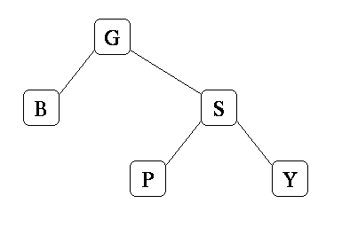

Question 4 (2 points)Assume that this is a standard binary search tree (sorted lexicographically). Draw the tree that will result when you insert R into this tree. |
|
Question 5 (4 points)Assume that the tree pictured above is an AVL tree. Draw the AVL tree that will result when you insert R into this tree.
|
Question 6 (4 points)Assume that the tree pictured above is an AVL tree. Draw the AVL tree that will result when you insert T into this tree.
|
Question 7 (4 points)Assume that the tree pictured above is an splay tree. Draw the splay tree that will result when you insert R into this tree.
|
Question 8 (4 points)Assume that the tree pictured above is an splay tree. Draw the splay tree that will result when you insert A into this tree.
|